CODING AGENTS AS PIXEL WORLD MODELS
traex/DeepSeek-V4.1-Flash · 0016
尚未保存可播放视频
Static locked-off single-shot with fixed frame throughout filmed with constant framerate in real-time. The scene shows a realistic scientific demonstration. The scene only contains the described setup and actions. The green kinetic sand is located on a wooden table, and the blue-black grabber tool is suspended over it. The blue-black grabber tool releases the blue tennis ball above a pile of green kinetic sand.
failed逐轮保存的候选
回放视频、检查图与代码变化。
每份候选均可单独播放。实际图片检查记录在下方工具轨迹中。
可观测工具轨迹
实际执行的命令与返回图片。
命令 1exit 0
/bin/bash -c "pwd && rg --files -g 'prompt.txt' -g 'GENERATION_RULES.md' -g '"'!*.mp4'"' -g '"'!*.png'"'"
命令 2exit 0
/bin/bash -c "ls -la && find . -maxdepth 2 -type f -printf '%p %s bytes\\n' | sort"
命令 3exit 0
/bin/bash -c 'cat GENERATION_RULES.md'
命令 4exit 0
/bin/bash -c 'cat prompt.txt'
命令 5exit 0
/bin/bash -c "sed -n '1,240p' artifact_io.py"
命令 6exit 0
/bin/bash -c "sed -n '1,240p' player_template.html"
命令 7exit 0
/bin/bash -c "python - <<'PY' import importlib.util for name in ['cv2','numpy','PIL','scipy','skimage']: print(name, bool(importlib.util.find_spec(name))) PY"
命令 8exit 0
/bin/bash -c "python - <<'PY'
from PIL import Image
im=Image.open('first_frame.png')
im.crop((80,0,180,90)).resize((600,540)).save('.tmp/top_zoom.png')
im.crop((70,65,200,140)).resize((780,450)).save('.tmp/sand_zoom.png')
PY"命令 9exit 0
/bin/bash -c "python - <<'PY'
import cv2, numpy as np
im=cv2.imread('first_frame.png')[:,:,::-1]
hsv=cv2.cvtColor(im, cv2.COLOR_RGB2HSV)
# sample ROI central
for y,x in [(52,132),(50,120),(52,145),(20,112),(30,115),(45,120),(50,150),(78,132),(90,132),(20,132),(70,132),(5,132)]:
print((x,y),'rgb',im[y,x],'hsv',hsv[y,x])
# blue pixel range in top
roi=im[:90,90:175]
r=roi.reshape(-1,3)
print('blue-like', ((r[:,2]>r[:,0]+15)&(r[:,2]>r[:,1]-5)&(r[:,2]>60)).sum())
PY"命令 10exit 0
/bin/bash -c "python - <<'PY'
import cv2, numpy as np
im=cv2.imread('first_frame.png')
rgb=im[:,:,::-1]
hsv=cv2.cvtColor(im,cv2.COLOR_BGR2HSV)
# ball mask in ROI circle
Y,X=np.ogrid[:144,:256]
mask=((X-132)**2+(Y-51)**2<22**2)&(hsv[:,:,0]>85)&(hsv[:,:,0]<115)&(hsv[:,:,1]>80)&(hsv[:,:,2]>45)
ys,xs=np.where(mask)
print('ball pix',len(xs),'bounds',xs.min(),xs.max(),ys.min(),ys.max())
# sand green mask
sm=(hsv[:,:,0]>38)&(hsv[:,:,0]<85)&(hsv[:,:,1]>80)&(hsv[:,:,2]>35)
sm[:65]=False
n,lab,stats,cent=cv2.connectedComponentsWithStats(sm.astype(np.uint8),8)
for i in np.argsort(stats[1:,4])[::-1][:5]+1:
print(i,stats[i].tolist(),cent[i])
# gripper dark/blue mask
gm=((hsv[:,:,2]<65)|((hsv[:,:,0]>85)&(hsv[:,:,0]<120)&(hsv[:,:,1]>90)))&(Y<60)&(X>90)&(X<180)
gm &= ~mask
print('grip pix',gm.sum())
cv2.imwrite('.tmp/masks.png', np.dstack([mask*255,sm*255,gm*255]))
PY"命令 11exit 0
/bin/bash -c "python - <<'PY'
import cv2,numpy as np
im=cv2.imread('first_frame.png')
# print patches enlarged with grid? save
cv2.imwrite('.tmp/grip_crop.png',cv2.resize(im[0:80,80:185],(840,640),interpolation=cv2.INTER_NEAREST))
PY"命令 12exit 0
/bin/bash -c "python - <<'PY'
import cv2,numpy as np
im=cv2.imread('first_frame.png'); rgb=im[:,:,::-1]; hsv=cv2.cvtColor(im,cv2.COLOR_BGR2HSV)
Y,X=np.ogrid[:144,:256]
# region top only
sat=hsv[:,:,1]; val=hsv[:,:,2]
m=((val<130)|((hsv[:,:,0]>85)&(hsv[:,:,0]<125)&(sat>55)))&(Y<78)&(X>85)&(X<180)
# remove blue ball sphere
m &= ((X-132)**2+(Y-52)**2 > 23**2)
m=(m.astype(np.uint8)*255)
# morph
m=cv2.morphologyEx(m,cv2.MORPH_CLOSE,np.ones((3,3),np.uint8))
cv2.imwrite('.tmp/grip_mask.png',m)
# overlay
out=rgb.copy(); out[m>0]=out[m>0]*.3+np.array([255,0,0])*.7
cv2.imwrite('.tmp/grip_overlay.png',out[:,:,::-1])
PY"命令 13exit 0
/bin/bash -c "python - <<'PY'
import cv2,numpy as np
im=cv2.imread('first_frame.png'); hsv=cv2.cvtColor(im,cv2.COLOR_BGR2HSV)
Y,X=np.ogrid[:144,:256]
m=((hsv[:,:,2]<130)|((hsv[:,:,0]>85)&(hsv[:,:,0]<125)&(hsv[:,:,1]>55)))&(Y<78)&(X>85)&(X<180)
m &= ((X-132)**2+(Y-52)**2 > 23**2)
# exclude uncertain low region y 68-78 except gripper x 115-150
m &= ~((Y>66)&~((X>115)&(X<150)))
n,lab,stats,cent=cv2.connectedComponentsWithStats(m.astype(np.uint8),8)
print(stats)
# keep components area>3
keep=np.zeros_like(m)
for i in range(1,n):
if stats[i,4]>4: keep |= lab==i
cv2.imwrite('.tmp/grip_mask2.png',keep.astype(np.uint8)*255)
PY"命令 14exit 0
/bin/bash -c "python - <<'PY'
import cv2,numpy as np
im=cv2.imread('first_frame.png'); rgb=im[:,:,::-1]
for y in range(58,82):
xs=[]
for x in range(95,175):
r,g,b=rgb[y,x]
if (r<120 and g<130 and b<135) or (b>g+20 and b>r+20 and b>75): xs.append(x)
# runs
runs=[]
if xs:
s=p=xs[0]
for x in xs[1:]:
if x>p+1:runs.append((s,p));s=x
p=x
runs.append((s,p))
print(y,runs)
PY"命令 15exit 0
/bin/bash -c "python - <<'PY'
import cv2,numpy as np
im=cv2.imread('first_frame.png'); rgb=im[:,:,::-1]
for y in range(22,58):
xs=[]
for x in range(100,165):
r,g,b=map(int,rgb[y,x]);
if b>g+12 and b>r+15 and b>60: xs.append(x)
runs=[]
if xs:
s=p=xs[0]
for x in xs[1:]:
if x>p+1:runs.append((s,p));s=x
p=x
runs.append((s,p))
print(y,runs)
PY"命令 16exit 0
/bin/bash -c "python - <<'PY'
import cv2,numpy as np
im=cv2.imread('first_frame.png'); rgb=im[:,:,::-1]; hsv=cv2.cvtColor(im,cv2.COLOR_BGR2HSV)
Y,X=np.ogrid[:144,:256]
# green mask stats rows
sm=(hsv[:,:,0]>35)&(hsv[:,:,0]<85)&(hsv[:,:,1]>70)&(hsv[:,:,2]>25)&(Y>65)
for y in range(70,133,3):
xs=np.where(sm[y])[0]
if len(xs): print(y,xs.min(),xs.max(),len(xs))
# bounds
ys,xs=np.where(sm)
print('sand bounds',xs.min(),xs.max(),ys.min(),ys.max())
# ball estimated center and edge details
PY"命令 17exit 0
/bin/bash -c "python - <<'PY'
import cv2,numpy as np
im=cv2.imread('first_frame.png'); hsv=cv2.cvtColor(im,cv2.COLOR_BGR2HSV)
Y,X=np.ogrid[:144,:256]
# print mean color in ring around ball, grid sample
for y in [28,30,32,34,36,38,40,42,44,46,48,50,52,54,56,58,60,62,64,66,68,70]:
print(y, [tuple(int(v) for v in im[y,x][::-1]) for x in [112,116,120,124,128,132,136,140,144,148,152,156]])
PY"命令 18exit 0
/bin/bash -c "python - <<'PY'
import cv2,numpy as np
im=cv2.imread('first_frame.png')
cv2.imwrite('.tmp/ball_crop.png',cv2.resize(im[20:75,105:160],(660,660),interpolation=cv2.INTER_NEAREST))
cv2.imwrite('.tmp/sand_crop.png',cv2.resize(im[72:134,78:192],(912,496),interpolation=cv2.INTER_NEAREST))
PY"命令 19exit 0
/bin/bash -c "python - <<'PY'
import cv2,numpy as np
im=cv2.imread('first_frame.png'); rgb=im[:,:,::-1]; hsv=cv2.cvtColor(im,cv2.COLOR_BGR2HSV)
Y,X=np.ogrid[:144,:256]
# grip color broad: dark or blue
g=(((hsv[:,:,0]>=88)&(hsv[:,:,0]<=125)&(hsv[:,:,1]>70)&(hsv[:,:,2]>35))|(hsv[:,:,2]<105))
left=g&(X>=102)&(X<=123)&(Y>=18)&(Y<=79)
right=g&(X>=143)&(X<=168)&(Y>=18)&(Y<=79)
# remove likely ball area not needed here
for name,m in [('left',left),('right',right)]:
out=np.zeros((144,256,3),np.uint8); out[m]=rgb[m]
cv2.imwrite('.tmp/'+name+'_sprite.png',out[:,:,::-1])
print(name,m.sum())
# overlay masks colored
ov=rgb.copy();ov[left]=[255,0,0];ov[right]=[255,0,255]
cv2.imwrite('.tmp/fingers_mask.png',ov[:,:,::-1])
PY"命令 20exit 0
/bin/bash -c "python - <<'PY'
import cv2,numpy as np
im=cv2.imread('first_frame.png'); rgb=im[:,:,::-1].astype(float); hsv=cv2.cvtColor(im,cv2.COLOR_BGR2HSV)
Y,X=np.ogrid[:144,:256]
# background approx: use left/right vertical row around same y; create inpaint candidate with masks of all top objects
mask=((X>102)&(X<168)&(Y<78)).astype(np.uint8)*255
# exclude obvious ball by still all
bg=cv2.inpaint(im,mask,3,cv2.INPAINT_TELEA)
cv2.imwrite('.tmp/bg_inpaint.png',bg)
PY"命令 21exit 0
/bin/bash -c "python - <<'PY'
from PIL import Image,ImageDraw,ImageFont
im=Image.open('first_frame.png').resize((1024,576),Image.Resampling.NEAREST)
d=ImageDraw.Draw(im)
for x in range(0,257,10):
X=x*4
d.line((X,0,X,576),fill=(255,0,0) if x%50==0 else (120,40,40),width=1)
if x%20==0:d.text((X+2,2),str(x),fill=(255,255,0))
for y in range(0,145,10):
Y=y*4
d.line((0,Y,1024,Y),fill=(255,0,0) if y%50==0 else (120,40,40),width=1)
if y%20==0:d.text((2,Y+2),str(y),fill=(255,255,0))
im.save('.tmp/grid.png')
PY"命令 22exit 0
/bin/bash -c "python - <<'PY'
import cv2,numpy as np
im=cv2.imread('first_frame.png'); rgb=im[:,:,::-1]; hsv=cv2.cvtColor(im,cv2.COLOR_BGR2HSV)
Y,X=np.ogrid[:144,:256]
# rough ball circle
bm=((X-133.5)**2+(Y-42.5)**2<22.5**2)
# gr mask as broad then keep only pixels excluding ball
g=(((hsv[:,:,0]>=88)&(hsv[:,:,0]<=125)&(hsv[:,:,1]>55)&(hsv[:,:,2]>25))|(hsv[:,:,2]<95))&(Y<80)&(X>98)&(X<170)&~bm
# image display
out=rgb.copy();out[g]=[255,0,0]
cv2.imwrite('.tmp/gr_overlay2.png',out[:,:,::-1])
print(g.sum())
PY"命令 23exit 0
/bin/bash -c "python - <<'PY'
import cv2,numpy as np
im=cv2.imread('first_frame.png'); hsv=cv2.cvtColor(im,cv2.COLOR_BGR2HSV)
Y,X=np.ogrid[:144,:256]
# ball: circle plus color criteria
bm=((X-133.5)**2+(Y-42.5)**2<23.5**2)&(hsv[:,:,0]>87)&(hsv[:,:,0]<117)&(hsv[:,:,1]>35)&(hsv[:,:,2]>20)
# exact contour-ish from threshold
bm = ((X-133.5)**2+(Y-42.5)**2<22.2**2) & (hsv[:,:,1]>25)
# but bottom rows may be shadowish
cv2.imwrite('.tmp/ball_mask.png',bm.astype(np.uint8)*255)
# left/right gripper polygon-ish by saturation/dark + not ball
base=(((hsv[:,:,0]>=85)&(hsv[:,:,0]<=128)&(hsv[:,:,1]>50)&(hsv[:,:,2]>20))|(hsv[:,:,2]<115))
base&=~bm
# finger left includes x 103:124 y 21:77, right x 143:167 y 18:76. Use contours.
for name,(x0,x1) in [('left',(100,125)),('right',(142,170))]:
m=base.copy();m[:18]=False;m[80:]=False;m[:,:x0]=False;m[:,x1:]=False
# remove stray bottom x region
if name=='left': m[72:, :107]=False;m[72:,124:]=False
n,lab,stats,cent=cv2.connectedComponentsWithStats(m.astype(np.uint8),8)
out=np.zeros_like(m)
for i in range(1,n):
if stats[i,4]>=3: out |= lab==i
cv2.imwrite('.tmp/'+name+'_m.png',out.astype(np.uint8)*255)
print(name,out.sum(),cv2.boundingRect(out.astype(np.uint8)))
PY"命令 24exit 0
/bin/bash -c "python - <<'PY'
from PIL import Image,ImageDraw
im=Image.open('first_frame.png').crop((90,0,180,85)).resize((900,850),Image.Resampling.NEAREST)
d=ImageDraw.Draw(im)
for x in range(90,181,5):
X=(x-90)*10; d.line((X,0,X,850),fill=(255,0,0) if x%10==0 else (120,50,50),width=1)
if x%10==0:d.text((X+2,2),str(x),fill=(255,255,0))
for y in range(0,86,5):
Y=y*10; d.line((0,Y,900,Y),fill=(255,0,0) if y%10==0 else (120,50,50),width=1)
if y%10==0:d.text((2,Y+2),str(y),fill=(255,255,0))
im.save('.tmp/grip_grid.png')
PY"命令 25exit 0
/bin/bash -c "python - <<'PY'
import cv2,numpy as np
im=cv2.imread('first_frame.png'); rgb=im[:,:,::-1]; hsv=cv2.cvtColor(im,cv2.COLOR_BGR2HSV)
Y,X=np.ogrid[:144,:256]
# ball circle mask
bm=((X-133.5)**2+(Y-42.7)**2<22.2**2)&(hsv[:,:,1]>18)
# build finger masks via hand-picked broad polygons then color threshold, excluding ball
polys={'left':np.array([[103,18],[115,17],[116,24],[116,44],[121,54],[123,60],[120,70],[116,74],[111,69],[105,71],[101,76],[97,72],[101,64],[105,54],[108,39],[108,26]],np.int32),
'right':np.array([[147,18],[155,17],[164,24],[164,34],[161,44],[157,51],[154,60],[152,68],[149,75],[144,71],[139,70],[142,61],[145,50],[147,39]],np.int32)}
for name,poly in polys.items():
pm=np.zeros((144,256),np.uint8);cv2.fillPoly(pm,[poly],1)
m=(pm>0)&~bm
# include all actual pixels in polygon (avoid excluding gray highlights)
cv2.imwrite('.tmp/'+name+'_poly.png',m.astype(np.uint8)*255)
print(name,m.sum())
PY"命令 26exit 0
/bin/bash -c "python - <<'PY'
import cv2,numpy as np
im=cv2.imread('first_frame.png'); rgb=im[:,:,::-1]
mask=cv2.imread('.tmp/left_poly.png',0)
out=rgb.copy();out[mask>0]=[255,0,0]
cv2.imwrite('.tmp/poly_overlay.png',out[:,:,::-1])
PY"命令 27exit 0
/bin/bash -c "python - <<'PY'
import cv2,numpy as np
im=cv2.imread('first_frame.png')
Y,X=np.ogrid[:144,:256]
m=((X-133.5)**2+(Y-42.5)**2<21.8**2)
out=np.zeros_like(im);out[m]=im[m]
cv2.imwrite('.tmp/ball_sprite_raw.png',cv2.resize(out[18:68,110:158],(480,500),interpolation=cv2.INTER_NEAREST))
PY"命令 28exit 0
/bin/bash -c "python - <<'PY'
import cv2,numpy as np
im=cv2.imread('first_frame.png')
# rows 50 onward print edge: find pixels close to ball blue
for y in range(38,61):
xs=[]
for x in range(108,160):
b,g,r=map(int,im[y,x]);
if b>r+10 and b>g+5:xs.append(x)
print(y,(min(xs),max(xs)) if xs else None)
PY"命令 29exit 0
/bin/bash -c "python - <<'PY'
import cv2,numpy as np
im=cv2.imread('first_frame.png')
for y in range(20,58,2):
xs=[]
for x in range(105,165):
b,g,r=map(int,im[y,x]);
if b>r+10 and b>g+5:xs.append(x)
print(y,(min(xs),max(xs)) if xs else None)
PY"命令 30exit 0
/bin/bash -c "python - <<'PY'
import cv2,numpy as np
im=cv2.imread('first_frame.png');hsv=cv2.cvtColor(im,cv2.COLOR_BGR2HSV)
Y,X=np.ogrid[:144,:256]
# create visual overlays of candidate ball mask strict blue
for name,m in [
('blue',((hsv[:,:,0]>90)&(hsv[:,:,0]<120)&(hsv[:,:,1]>80)&(hsv[:,:,2]>20)&((X-133.5)**2+(Y-42.5)**2<24**2))),
('sat',((hsv[:,:,1]>20)&((X-133.5)**2+(Y-42.5)**2<22.4**2))),
('strict',((hsv[:,:,0]>85)&(hsv[:,:,0]<120)&(hsv[:,:,1]>40)&(hsv[:,:,2]>15)&((X-133.5)**2+(Y-42.5)**2<23**2)))]:
out=im.copy();out[m]=[0,0,255];cv2.imwrite('.tmp/bm_'+name+'.png',out)
print(name,m.sum())
PY"命令 31exit 0
/bin/bash -c "python - <<'PY'
import cv2,numpy as np
im=cv2.imread('first_frame.png'); rgb=im[:,:,::-1]; hsv=cv2.cvtColor(im,cv2.COLOR_BGR2HSV)
Y,X=np.ogrid[:144,:256]
# finger color: blue/dark or gray blue; masks from components by connectivity seeds
seed=np.zeros((144,256),np.uint8)
# candidate colors
cand=(((hsv[:,:,0]>85)&(hsv[:,:,0]<135)&(hsv[:,:,1]>35)&(hsv[:,:,2]>15))|(hsv[:,:,2]<130))
# remove ball + green + wood
cand &= ((X-133.5)**2+(Y-42.5)**2>24**2)
cand &= ~((hsv[:,:,0]>35)&(hsv[:,:,0]<85)&(hsv[:,:,1]>60))
# manually seeds: left at (113,25), right (152,25), lower fingers etc
# crop components
cand[:15]=False;cand[82:]=False;cand[:,:95]=False;cand[:,172:]=False
n,lab,stats,cent=cv2.connectedComponentsWithStats(cand.astype(np.uint8),8)
for i in range(1,n):
if stats[i,4]>4: print(i,stats[i].tolist(),cent[i])
PY"命令 32exit 0
/bin/bash -c "python - <<'PY'
import cv2
im=cv2.imread('first_frame.png')
g=cv2.cvtColor(im,cv2.COLOR_BGR2GRAY)
for p2 in [10,15,20,25]:
c=cv2.HoughCircles(g,cv2.HOUGH_GRADIENT,dp=1,minDist=20,param1=60,param2=p2,minRadius=10,maxRadius=25)
print(p2,c)
PY"命令 33exit 0
/bin/bash -c "python - <<'PY'
import cv2,numpy as np
im=cv2.imread('first_frame.png'); hsv=cv2.cvtColor(im,cv2.COLOR_BGR2HSV)
Y,X=np.ogrid[:144,:256]
# ball bottom line at y 56, circle 21.5 radius center 34? sphere top 20, bottom 57 -> center 38.5? Actually mask x range
# Find radial center by horizontal boundaries y 20..56
rows={}
for y in range(20,58):
xs=[]
for x in range(105,165):
b,g,r=map(int,im[y,x]);
if b>r+12 and b>g+5: xs.append(x)
rows[y]=(min(xs),max(xs)) if xs else None
print(rows)
# select top center from ellipse equation boundaries
PY"命令 34exit 0
/bin/bash -c "python - <<'PY'
import cv2,numpy as np
im=cv2.imread('first_frame.png')
# center x 133.5; blue ball bounds rows 20..56, radius 18.5, center y 38.5, but left starts 110 at top due occlusion? inspect crop with 2x grid only
crop=im[15:62,105:163]
cv2.imwrite('.tmp/ball_crop2.png',cv2.resize(crop,(580,470),interpolation=cv2.INTER_NEAREST))
PY"命令 35exit 0
/bin/bash -c "python - <<'PY'
import cv2,numpy as np
im=cv2.imread('first_frame.png'); hsv=cv2.cvtColor(im,cv2.COLOR_BGR2HSV)
Y,X=np.ogrid[:144,:256]
# Try circular ball mask center (134,38.5), radius 18.5, and remove gripper where likely: compare pixels
bm=((X-134)**2+(Y-38.5)**2<18.7**2)
# print counts by row
for y in range(18,60):
xs=np.where(bm[y])[0]
if len(xs):print(y,xs.min(),xs.max(),len(xs))
cv2.imwrite('.tmp/bm_circ.png',bm.astype(np.uint8)*255)
PY"命令 36exit 0
/bin/bash -c "python - <<'PY'
import cv2,numpy as np
im=cv2.imread('first_frame.png'); hsv=cv2.cvtColor(im,cv2.COLOR_BGR2HSV)
Y,X=np.ogrid[:144,:256]
bm=((X-134)**2+(Y-38.5)**2<18.7**2)
# evaluate pixel hue/color for circle
for y in [22,26,30,34,38,42,46,50,54]:
print('y',y)
for x in [116,118,120,122,124,126,128,130,132,134,136,138,140,142,144,146,148,150,152]:
if bm[y,x]: print(x,tuple(int(v) for v in im[y,x][::-1]),end='; ')
print()
PY"命令 37exit 0
/bin/bash -c "python - <<'PY'
import cv2,numpy as np
im=cv2.imread('first_frame.png'); hsv=cv2.cvtColor(im,cv2.COLOR_BGR2HSV)
Y,X=np.ogrid[:144,:256]
# gripper mask simply polygon visible object + exclude ball; inpaint background
pm=np.zeros((144,256),np.uint8)
poly=np.array([[104,0],[163,0],[169,17],[166,34],[164,48],[157,55],[155,67],[153,74],[149,78],[143,74],[139,72],[140,64],[143,54],[145,45],[146,35],[145,22],[138,17],[128,17],[121,18],[117,23],[118,37],[123,48],[124,57],[124,68],[120,73],[115,74],[111,69],[105,70],[101,77],[97,71],[100,62],[106,51],[110,39],[110,24],[104,16]],np.int32)
cv2.fillPoly(pm,[poly],255)
# also ball ellipse polygon fill
bm=((X-134)**2/(18.7**2)+(Y-38.5)**2/(18.7**2)<1)
pm[bm]=255
# inpaint
bg=cv2.inpaint(im,pm,3,cv2.INPAINT_TELEA)
cv2.imwrite('.tmp/bg_objmask.png',bg)
PY"命令 38exit 0
/bin/bash -c "python - <<'PY'
import cv2, numpy as np
im=cv2.imread('first_frame.png')[:,:,::-1]
clean=im.copy()
# horizontal interpolated reconstruction of the suspended-object strip
for y in range(0,83):
l=np.median(im[y,84:94],axis=0)
r=np.median(im[y,176:186],axis=0)
xs=np.arange(94,177)
t=(xs-94)/(176-94)
vals=(1-t)[:,None]*l[None,:]+t[:,None]*r[None,:]
clean[y,94:177]=np.clip(vals,0,255).astype(np.uint8)
# soften replacement edges
clean=cv2.GaussianBlur(clean,(3,3),0.7)
cv2.imwrite('.tmp/clean_plate.png',clean[:,:,::-1])
PY"命令 39exit 0
/bin/bash -c "python - <<'PY'
import cv2,numpy as np
im=cv2.imread('first_frame.png'); hsv=cv2.cvtColor(im,cv2.COLOR_BGR2HSV)
Y,X=np.ogrid[:144,:256]
# Need precise object masks. inspect with saturation threshold crop and coordinates
# save threshold overlay for all top object via low-saturation mismatch?
# approximate masks using color and hand polygons, then keep original pixels within; erode little.
ball=((X-134.0)**2/(18.6**2)+(Y-38.6)**2/(18.6**2)<=1.0)
# gripper include everything inside tight object silhouette, use hand shape approximated
pm=np.zeros((144,256),np.uint8)
poly=np.array([[105,0],[163,0],[169,18],[167,35],[162,48],[158,57],[157,65],[154,73],[150,78],[145,73],[139,69],[141,61],[144,52],[146,43],[147,33],[146,23],[140,17],[130,17],[121,18],[117,23],[118,37],[123,48],[124,57],[124,67],[120,73],[116,72],[112,67],[106,69],[102,76],[98,71],[100,63],[106,52],[109,40],[110,24],[105,16]],np.int32)
cv2.fillPoly(pm,[poly],1)
grip=(pm>0)&~ball
# ensure all actual gripper pixels only inside polygon; keep original
# create sprites RGBA with feather mask: interior exact; anti-aliased alpha edge based on geometry only
# save debug overlay
ov=im.copy(); ov[ball]=[0,0,255]; ov[grip]=[255,0,0]
cv2.imwrite('.tmp/object_masks.png',ov)
np.savez('.tmp/masks.npz',ball=ball,grip=grip)
PY"命令 40exit 0
/bin/bash -c "python - <<'PY'
import cv2,numpy as np
im=cv2.imread('first_frame.png'); rgb=im[:,:,::-1]
# object crop 90:180, 0:82 upscale with grid 1 px impossible; maybe nearest 12x
crop=im[0:82,90:180]
cv2.imwrite('.tmp/object_crop.png',cv2.resize(crop,(1080,984),interpolation=cv2.INTER_NEAREST))
PY"命令 41exit 0
/bin/bash -c "python - <<'PY'
import cv2,numpy as np
im=cv2.imread('first_frame.png')[:,:,::-1].astype(np.float32)
clean=cv2.imread('.tmp/clean_plate.png')[:,:,::-1].astype(np.float32)
hsv=cv2.cvtColor(im.astype(np.uint8),cv2.COLOR_RGB2HSV)
Y,X=np.ogrid[:144,:256]
roi=(X>90)&(X<180)&(Y<82)
ball=((X-135.0)**2/(15.8**2)+(Y-38.5)**2/(18.2**2)<1)
diff=np.max(np.abs(im-clean),axis=2)
cand=roi&~ball&((diff>10)|(hsv[:,:,1]>55)|(hsv[:,:,2]<95))
# only top object region
cand &= ((X<125)|(X>142))
cand &= ~((Y>73)&~(((X>95)&(X<123))|((X>140)&(X<170))))
# morphology close and keep comps
cand8=(cand.astype(np.uint8)*255)
cand8=cv2.morphologyEx(cand8,cv2.MORPH_CLOSE,np.ones((3,3),np.uint8))
n,lab,stats,cent=cv2.connectedComponentsWithStats(cand8,8)
keep=np.zeros_like(cand)
for i in range(1,n):
if stats[i,4]>=10: keep|=lab==i
out=im.astype(np.uint8).copy();out[keep]=[255,0,0]
cv2.imwrite('.tmp/grip_diff_overlay.png',out)
cv2.imwrite('.tmp/grip_diff_mask.png',keep.astype(np.uint8)*255)
print([(i,stats[i].tolist()) for i in range(1,n) if stats[i,4]>3])
PY"命令 42exit 0
/bin/bash -c "python - <<'PY'
import cv2,numpy as np
im=cv2.imread('first_frame.png'); rgb=im[:,:,::-1]
# upscaled clean crop to see if it destroys dark tool and how much region affected
cv2.imwrite('.tmp/clean_crop.png',cv2.resize(cv2.imread('.tmp/clean_plate.png')[0:85,85:185],(1000,850),interpolation=cv2.INTER_NEAREST))
PY"命令 43exit 0
/bin/bash -c "python - <<'PY'
import cv2,numpy as np
im=cv2.imread('first_frame.png')
# look at only top 60 crop with 20x nearest and grid every 5 source px
crop=im[0:60,95:175]
big=cv2.resize(crop,(1600,1200),interpolation=cv2.INTER_NEAREST)
# no grid
cv2.imwrite('.tmp/top60.png',big)
PY"视觉工具实际返回图片 1

视觉工具实际返回图片 2
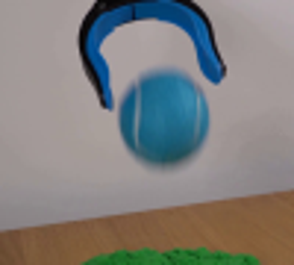
视觉工具实际返回图片 3
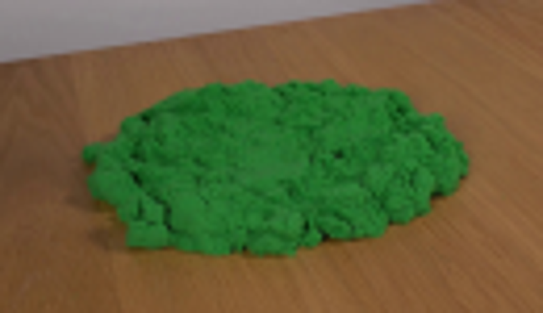
视觉工具实际返回图片 4
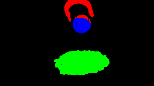
视觉工具实际返回图片 5
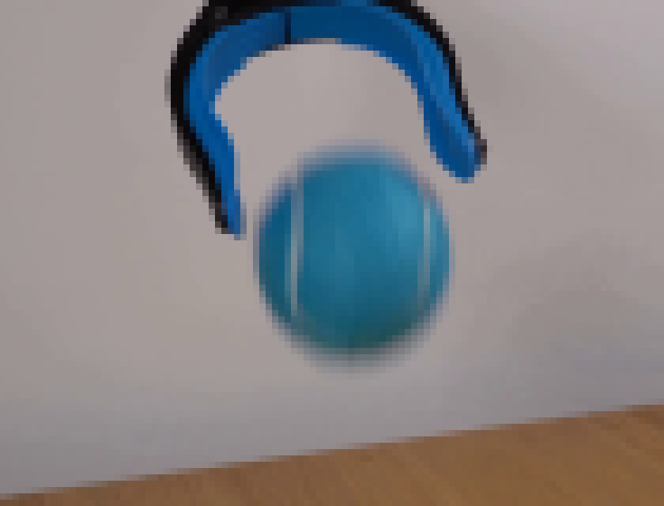
视觉工具实际返回图片 6
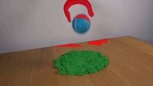
视觉工具实际返回图片 7
视觉工具实际返回图片 8
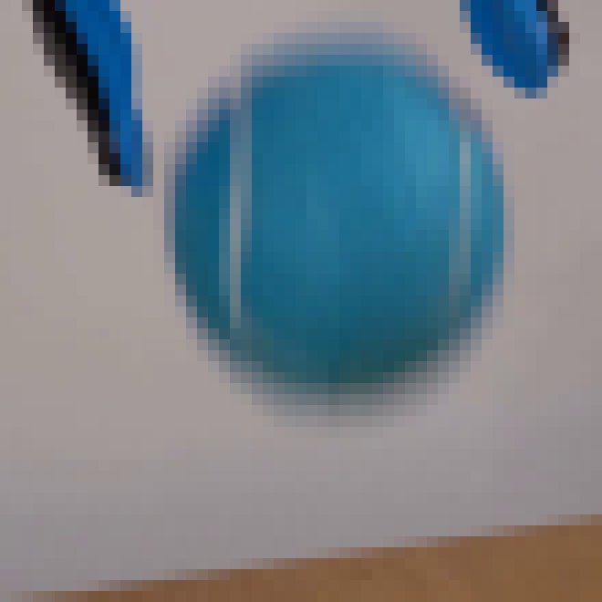
视觉工具实际返回图片 9
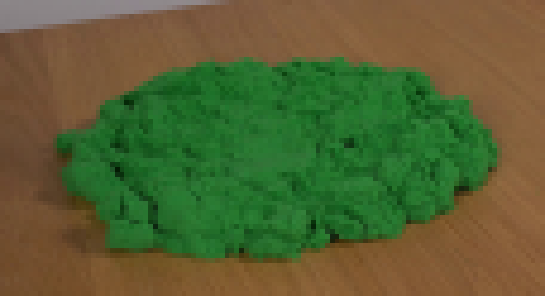
视觉工具实际返回图片 10
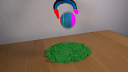
视觉工具实际返回图片 11
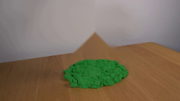
视觉工具实际返回图片 12
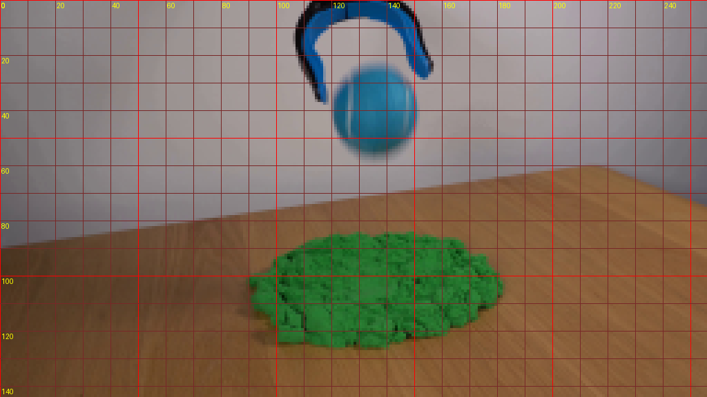
视觉工具实际返回图片 13
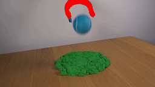
视觉工具实际返回图片 14
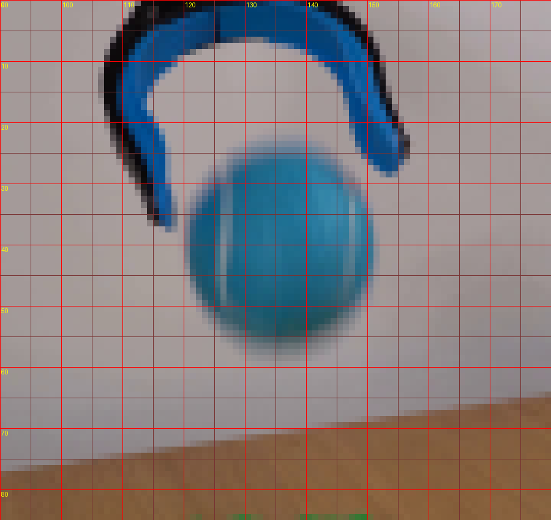
视觉工具实际返回图片 15
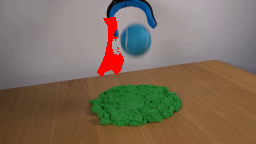
视觉工具实际返回图片 16
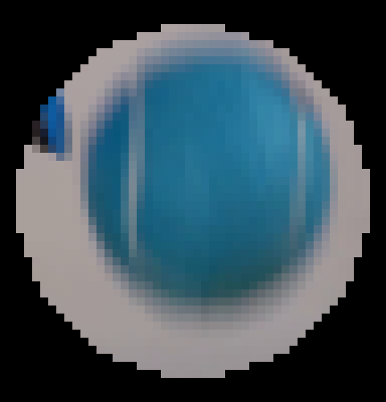
视觉工具实际返回图片 17
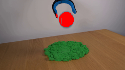
视觉工具实际返回图片 18
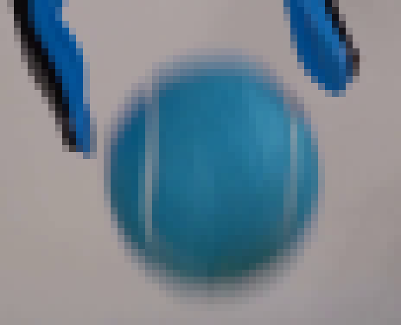
视觉工具实际返回图片 19
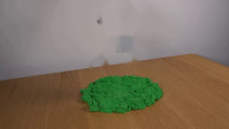
视觉工具实际返回图片 20
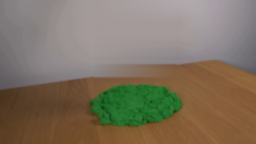
视觉工具实际返回图片 21
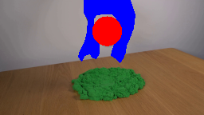
视觉工具实际返回图片 22
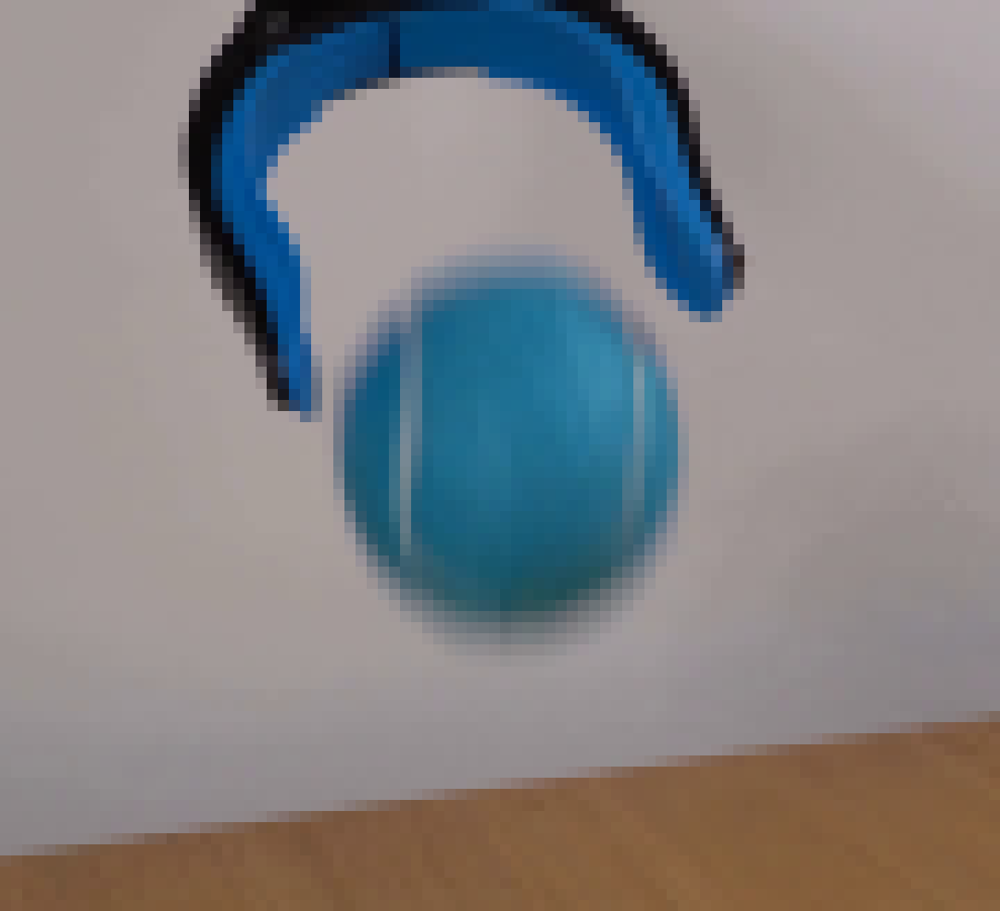
视觉工具实际返回图片 23
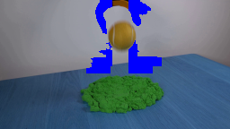
视觉工具实际返回图片 24
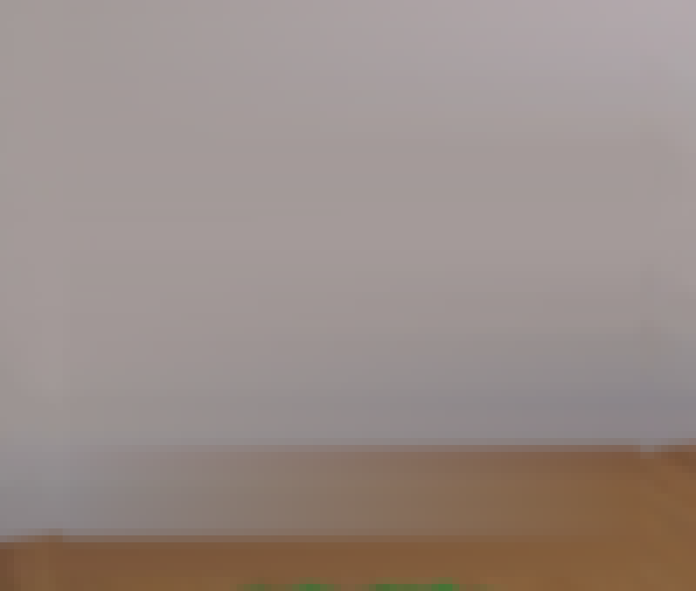
视觉工具实际返回图片 25
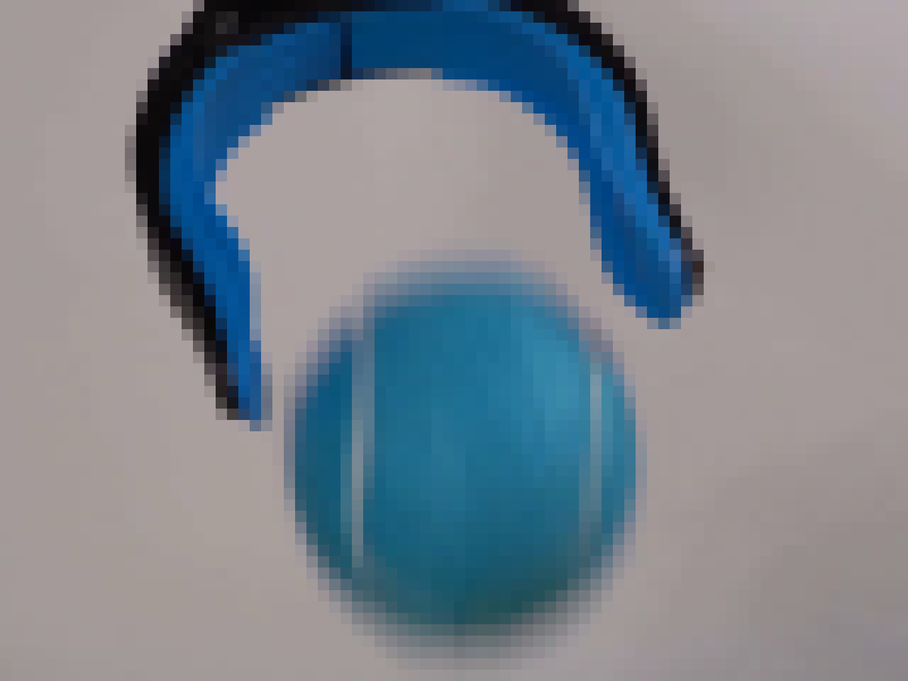
保存候选 0 份；完成命令 43 次；可验证图片返回 25 张。原始 API 响应与完整日志保留在本地。